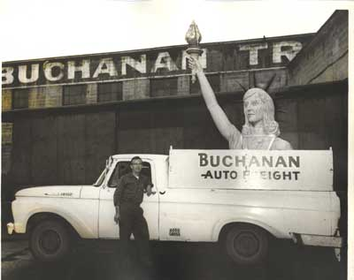
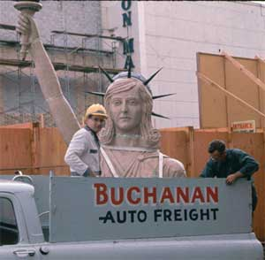

LynnBuchanan.com

They locally called her Lady Luck.
A bit of Yakima history: KIWANIS
Back in 1964 the Liberty Building in Yakima, Washington was remodeled by the owner. Amongst other renovations the rococo terra cotta decorative tiles were removed to make the building more "modern". On the top front corner of the four story building was a terra cotta facsimile of the Statue of Liberty, holding her lighted torch over the city of Yakima.
The statue of "Miss Liberty" was scheduled to be destroyed along with much of the trim of the Liberty Building. Some of us in the then "Young Men's Club", Kamiakin Kiwanis, felt that this bit of Yakima's history should be preserved. We arranged with Carroll Crane Service to lift her off the top of the building and lower her to a truck. She looked rather small when viewed from the street, but when the crane workers told us how tall she really was, we had to refigure the size of truck we needed to haul her.
In those days, Yakima had an icing rack along the railroad tracks where the railroad workers could put ice in the railroad cars to keep fruit and vegetables cool on their trip to destinations in the rest of the country. The rack was a high wooden structure where big blocks of ice, manufactured in a building alongside the tracks, were moved on a conveyor belt to the refrigerator cars where they were pushed into hatches on each end of the cars.
Mechanical refrigeration in railroad cars was just becoming common then so the icing racks were still in use for the many refrigerator cars that were cooled by ice. They had big hoppers on each end where the ice was held and fans to blow air thru the hoppers and into the railroad car. When we found how tall "Miss Liberty" really was, the only truck we could put her on and get under the icing racks at the railroad tracks was a 3/4 ton pickup. When she was mounted on a pallet in the pickup, her weight really made the pickup squat but the combination of statue and pickup would just barely clear the icing rack. The top of the torch just brushed the board hanging from the bottom of the icing rack on Lincoln Avenue as we brought her underneath.
Dick Harper, the driver, and I guided the loading of the pickup from Carroll Crane (per the picture in the Yakima Herald Republic, 10 Mar 06) and brought her to the Buchanan Warehouse where she sat for many months while we (The Kamiakin Kiwanis Club) tried to find a fitting home for her.
The Kamiakin club finally auctioned her off in an auction of items in a fundraiser for the club. A rock shop offered $50 for the statue if we would deliver her to their site on Fruitvale Boulevard. Buchanan Auto Freight donated the truck and labor for the saving of Miss Liberty and Kamiakin Kiwanis donated the cash involved. The crane folks charged Kamiakin $100.00 to lower her off the building so that fundraiser was a net loss, but a bit of history was saved for many years.
See the article in the Yakima Herald-Republic, 10 March 06, for the future plans for the Liberty Building.